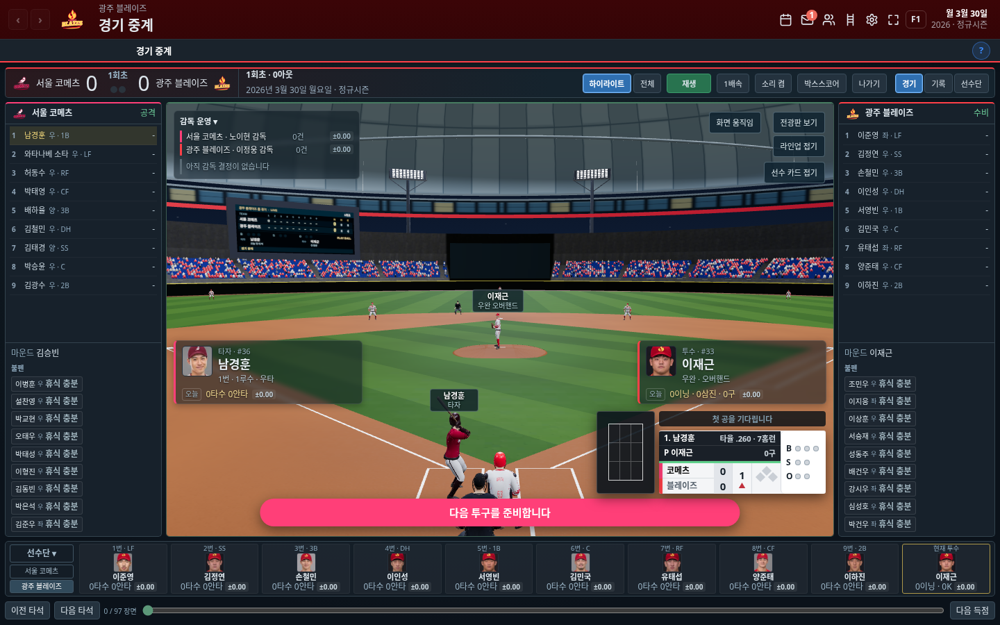
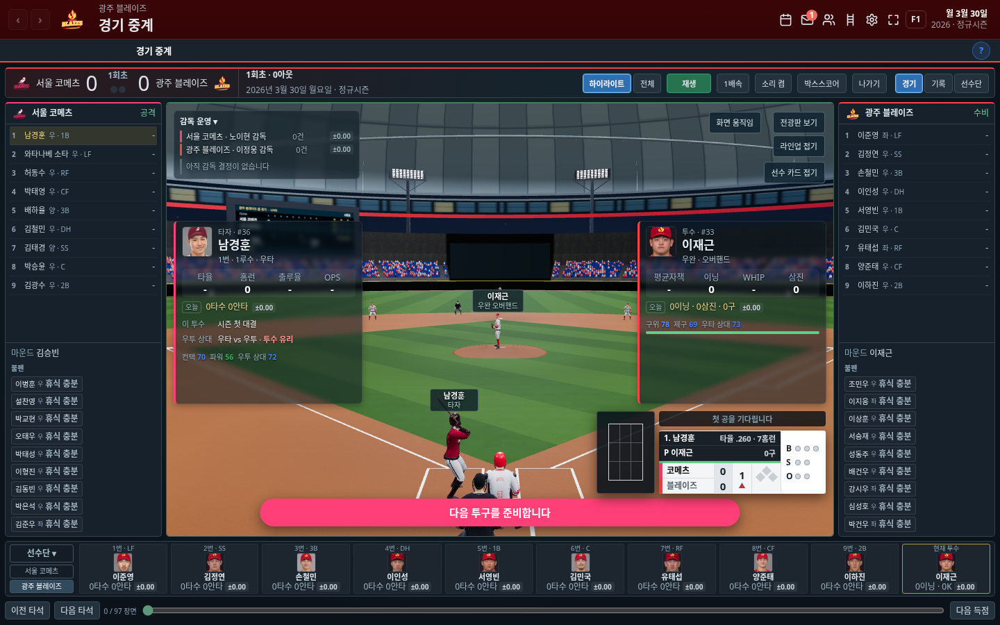
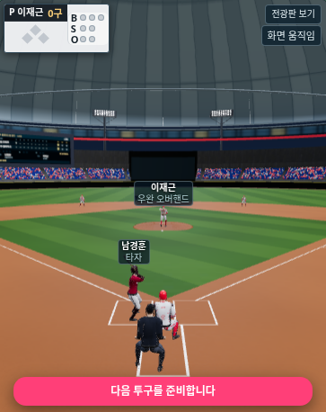

<!doctype html><html lang="ko"><meta charset="utf-8"><meta name="viewport" content="width=device-width,initial-scale=1"><title>중계 화면 비교</title><style>body{margin:0;background:#101820;color:#eef3f6;font:16px system-ui,sans-serif;padding:24px}main{max-width:1500px;margin:auto}h1{font-size:24px}h2{font-size:18px;margin-top:32px}.pair{display:grid;grid-template-columns:1fr 1fr;gap:16px}figure{margin:0}figcaption{padding:10px 0;color:#b7c5cf}img{display:block;width:100%;border-radius:6px}.pitch{max-width:780px}.detail{max-width:1100px}p{color:#b7c5cf}@media(max-width:700px){body{padding:12px}.pair{grid-template-columns:1fr}}</style><main><h1>중계 화면 비교</h1><p>검토용 · 미배포</p><h2>경기장 시야</h2><div class="pair"><figure><figcaption>기존</figcaption><a href="previews/pc-before.png"></a></figure><figure><figcaption>개선 · 선수 카드 축소</figcaption><a href="previews/pc-after.png"></a></figure></div><h2>상세 기록</h2><figure class="detail"><figcaption>마우스를 올리거나 키보드로 선택하면 펼쳐집니다.</figcaption><a href="previews/pc-detail.png"></a></figure><h2>모바일 투구</h2><p>같은 경기 · 같은 500ms 시점. 공 크기만 조정했습니다.</p><div class="pair pitch"><figure><figcaption>기존</figcaption></figure><figure><figcaption>개선</figcaption></figure></div></main></html>